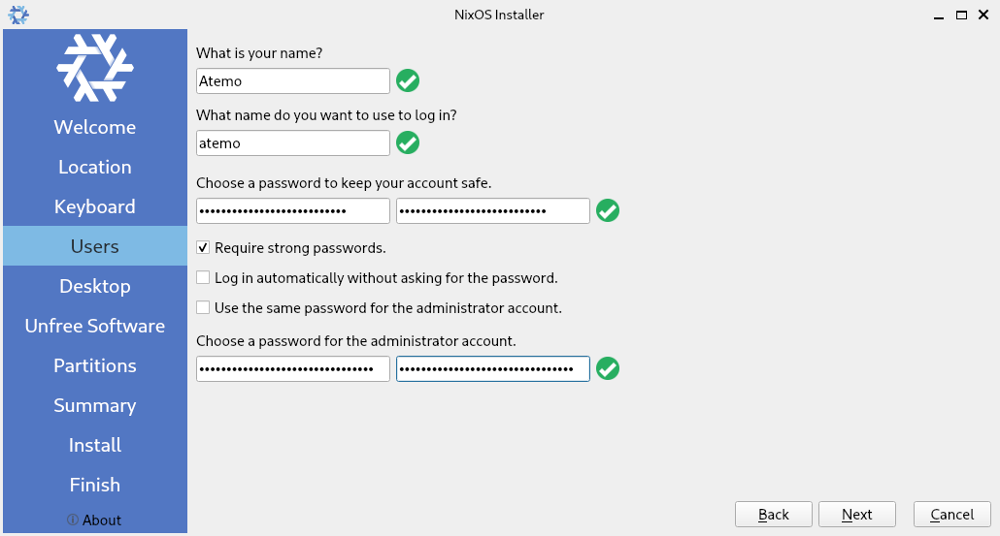
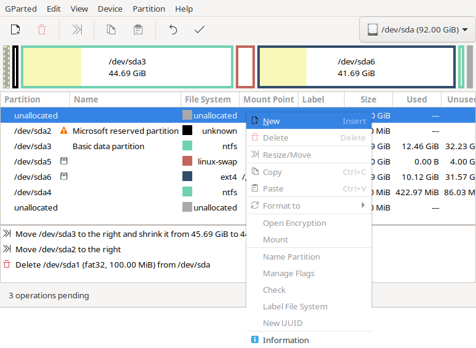

Last updated on the 30th of December, 2024.
Introduction.
Greetings. In this guide, I will show you one of the few ways to install NixOS graphically alongside an existing EFI installation of Windows 10 or Windows 11, on the same storage device.
Whilst it is not someting I would usually recommend doing since there are better ways to install different operating systems on one's computer, some people may simply not have a choice, or may find this to be more convenient. And, after having helped a few people with thtis exact thing, I feel it is a good opportunity to share this knowledge and help others.
This guide is very step-by-step, and includes images for every important step as well. Feel free to read it multiple times over if needed, and if you can, try it out on a virtual machine before doing it on actual hardware.
Assumptions.
Here are some assumptions made for this guide:
- Your computer boots in EFI mode.
- Your comupter has a 64-bit x86_64 CPU architecture.
- Windows 10 or 11 is already installed and working.
- Disk partitioning has not already been changed outside of Windows' defaults.
- Windows is the only operating system installed on your computer.
- There is enough storage space for both Windows and NixOS to live comfortably.
- You have backups of everything you need; Be it your personal data, or your Windows installation.
- You have previous experience with installing a Linux distribution, and know how to re-install Windows if necessary.
- You have an up-to-date NixOS installation medium, and a Windows one if necessary.
- Said installation medium of NixOS is a graphical one (GNOME or KDE Plasma).
- You know how to boot into said installation medium.
- You will install NixOS with a graphical desktop environments.
- Things could go wrong, and you are fully prepared for that possiblity.
With that aside, we can now begin.
[1] Creating an empty partition for NixOS.
[1.1] Opening Disk Management.
Turn your computer on, and boot into Windows. Once you have logged into the desktop, open the search menu, and search for "partition". The following program should be displayed, start it:
If you cannot find it here, you can find it in the Control Panel like so:
- Open the Control Panel (control.exe).
- Click on "System and Security".
- Scroll down to "Administrative Tools".
- Click on "Create and format hard disk partitions".
You should now have this window opened:
Here, we can see a normal Windows partitioning layout, with:
- The EFI System partition of 100MB (this will be important later).
- The main NTFS partition (this is our focus for now).
- The Windows Recovery partition (we will not touch this).
[1.2] Shrinking the NTFS partition.
We must now shrink the main NTFS partition to give enough space for NixOS.
Here is how we will achieve this:
- Right-click on the main NTFS partition.
- Click on "Shrink Volume…"; This window should appear:
- In "Enter the amount of space to shrink in MB", do so. Select an amount that will leave enough space for a NixOS installation, but also enough for Windows to keep working normally. In this case, I chose half of the total size.
- Click on "Shrink". You should now have a black-bannered unallocated partition, ready for NixOS to be installed in.
We are done with this part. Do not turn off your computer yet.
[2] Installing NixOS.
[2.1] Booting into NixOS.
To boot into NixOS and stop Windows from interfering with further partition changes, we will need not to shut down the computer, but restart it.
To do so, insert the NixOS installation medium into your computer, then restart it. Once the NixOS boot menu appears, press Enter at the default selection, which should be " NixOS [version] Installer", as seen here:

The system will now boot. A few seconds after the desktop has started, the installer program should automatically start.
Before proceeding to the intsallation, your computer will need to be connected to a stable network and have a stable power source. You may or may not have to re-start the installer program, Calamares, if some changed settings are not automatically detected after the automatic 5-seconds refresh on failed elements.
Once this is done, the installer window will look like this, prompting you to select the language you wish to proceed with:
From here on until the "Partitions" portion of the installer, steps are mostly similar to most other Linux desktop installers. For those who are sure to be familiar with it and NixOS' unique features in it, you may skip to "[2.3] NixOS partitioning and installation." of this guide. For the rest of you, follow along.
[2.2] NixOS installer.
Let us go through the NixOS installer, up to "Partitions":
- [ Welcome ] | As seen in the previous image, select the desired language, and click "Next".
- [ Location ] | Select the desired region and time zone. If desired, you may as well individually change the language and locales here too. Once done, click "Next".
- [ Users ] | Select a user name and password, as well as a root (admin) account password, then click "Next".

- [ Desktop ] | Select a graphical desktop to install, then click "Next".
- [ Unfree Software ] | Select whether to allow proprietary software to be installed. The text provided by the installer does a good job at explaining what it means. Once you have made your choice, click "Next"
[2.3] NixOS partitioning and installation.
You should now see this screen, which shows the partition layout, just as it was when we last modified it on Windows:
We can now proceed to the partitioning.
- We are presented multiple choices. For this guide, we will choose the "Manual partitioning" option. Select it, then click "Next". After we clicked it, we are shown the entire partitioning table. This is where we will asign partitions for the installation of NixOS.
- Click on the "FAT32" partition of 100MiB, then click "Edit". A new window will appear.
- In "Mount Point", select /boot, it should look like this:
- Click on "OK" once you have verified your actions.
- Click on the largest "Free Space", then click "Create". A new window will appear.
- In "Size", put the amount, in MiB, of swap we want to give NixOS. In my case, I will go with 4 GiB (4096 MiB).
- In "File System", select "linuxswap".
- In "FS Label", you may name the swap partition for NixOS. In my case, I will name it "nixos-swap". Once you have completed these steps, the window should look like this:
- Click on "OK" once you have verified your actions. A small red partition should now appear, showing the successful addition of the swap partition.
- Click once again on the largest "Free Space", then click "Create". A new window will appear.
- You may wish to change the file system from ext4 to something else if you wish, but in this case, I will stay with ext4.
- In "Mount Point", select /.
- In "FS Label", you may name the main storage partition for NixOS. In my case, I will name it "nixos". Once you have completed these steps, the window should look like this:
- Click on "OK" once you have verified your actions. You should now have a completed partition table, like so:
- Click on "Next". The following warning should show up, indicating that the boot partition of 100 MiB is too small. We will fix this after the installation.
- Click on "OK", then review your choices on this screen:
- Once you are absolutely sure that everything is in check, you may finally click "Install" There is NO going back from here on out. Note: If the installer looks stuck at 46%, this is perfectly normal. This step simply takes the longest out of the entire installation process.
Once the installation has finished, you should show this screen.
You may now power off the computer and remove the NixOS installation medium from it.
[3] Making the boot partition larger.
[3.1] First boot.
You can now boot your computer. Assuming your UEFI firmware does not mess with the boot order, you should now be greeted by systemd-boot, with an option to boot into whichever version of Windows you have installed, as well as NixOS, which will be the default boot option.
You can boot into Windows to see if is working, but it should not be necessary. If you do, however, remember to restart your computer instead of shutting it down, to allow for the final modification of partitions on the system that will be needed to increase the site of the boot partition.
Once you have booted into NixOS, logged in, and configured what you need (peripherals if needed, network…), we will be able to continue.
[3.2] Backing up the current boot files.
This is necessary because we will delete the boot partition to make it larger. Let us start. To make things desktop-independant and more universal, we will do most of the rest of the guide in a terminal emulator, but fear not, as always, you will be guided through. I also made it so most commands output verbosely, which means they will actually try to output what they are doing.
- Open a terminal emulator of your choice. In my kase, it will be KDE's Konsole. (get it? kase? case? KDE? …)
- Create a temporary directory to back the boot files to. Do so with this command:
mkdir -v /tmp/backup
This should be the output: mkdir: created directory '/tmp/backup'
- Go into a root shell with this command:
sudo -i
You should now have this shell prompt: [root@nixos:~]#
- Back up the boot files into the newly created directory. Do so with this command:
cp -vr /boot/* /tmp/backup/
You should see a bunch of lines on the terminal emulator, showing every file that has been copied.
- The final step before modifying the boot partition is to unmount it from the running system, to make it available. Do so with this command:
umount -v /boot
This should be the output: umount: /boot unmounted
- You can now exit from the root shell with the exit command.
[3.3] Resizing partitions with Gparted.
We will install and run Gparted to easily and graphically modify the needed partitions. We also need ntfs3g as a depedency, to give Gparted the ability to modify NTFS partitions. Then, we will edit the partitions that needs it. Once again, follow these steps.
- Temporarily install Gparted and ntfs3g, and run Gparted. Do so with the following command:
nix-shell -p gparted -p ntfs3g --run "sudo gparted"
Gparted will launch and show you the current partition layout:
- Right-click on the partition named "Basic data partition", then click on "Resize/Move":
- On the window that appears, in "Free space preceeding (MiB)", we need to put the amount of space we will want to add to the boot partition. In my case, just to be on the extra-safe side, I will add 1 GiB (1024 MiB).
- Once completed, click on "Resize/Move", and safely ignore the warning by clicking on "OK".
- Right-click on the partition named "Microsoft reserved partition", then click on "Resize/Move":
- On the window that appears, in "Free space following (MiB)", we need to lower the amount to 0, which will move the partition to the right, allowing us to create a large, unified boot partition in the following steps.
- Once completed, click on "Resize/Move", and safely ignore the warning by clicking on "OK".
- Right-click on the partition named "EFI system partition", then click on "Delete":
- This will leave an "unallocated" partition in its place, which combined with the space we previously freed from the Basic data partition. We can now create the new, larger boot partition. To do so, right-click on the new unallocated partition, then click on "New".

- On the window that appears, in "Partition name", put in exactly the following name: EFI System Partition.
- In "File system", select fat32, then click on "Add".
- The partitioning steps are now complete, though there are still some things to be done. Once you have reviewed the changes, press on the checkmark icon, then "Apply" on the window that appears. The operation will take a while to complete, depending on how much data has to be moved.
- Once the operation has completed, click on "Close".
- We now need to add the necessary flags to the newly created fat32 partition, to allow it to work properly. Right-click on it, then click on "Manage Flags".
- On the window that appears, click on "esp" and on "no_automount", then click on "Close".
- Now that we have modified this partition, its UUID has changed. We need to gather it, since we will need to update it in a nix configuration file. Right-click on the same partition again, then click on "Information".
- You may now copy the UUID somewhere for later use. In my case, I copied 2C40-6274 in my clipboard.
- Once you have copied the UUID, click on "Close".
- You can now close Gparted and go back to your terminal emulator of choice.
[3.4] Updating the boot UUID.
Now that we have copied the new boot partition's UUID, we need to modify the /etc/nixos/hardware-configuration.nix file; Something that should otherwise not be done in most situations. Go back to your terminal emulator of choice.
- The GNU nano text editor is pre-installed on NixOS. If you know how to use, ignore this step. If you want to use another text editor, you may use the following command, replacing micro with your terminal-based text editor of choice:
nix-shell -p micro
- Open the /etc/nixos/hardware-configuration.nix file with your text editor of choice. Make sure it can save with superuser rights, or launch it with sudo. Replace micro with your terminal-based text editor of choice:
micro /etc/nixos/hardware-configuration.nix
- Replace the old UUID of the "/boot" partition in the file with the one you have copied from Gparted.
- After you have done so, save the file and close the text editor. If you are using GNU nano, you can save the file by pressing Ctrl+s, then close by pressing Ctrl+k. Keep your terminal emulator opened.
[3.5] Restoring the boot files to the new boot partition.
We can now copy the backed-up boot files back into the newly created boot partition, we will do so in a terminal emulator:
- Mount the new boot partition back onto /boot with the following command, replacing /dev/sda1 if the partition name is different on your system:
sudo mount -vo umask=077 /dev/sda1 /boot
This should be the output: mount: /dev/sda1 mounted on /boot.
- Go into a root shell with this command:
sudo -i
You should now have this shell prompt: [root@nixos:~]#
- Copy the backed-up boot files into the mounted /boot directory. Do so with this command:
cp -vr /tmp/backup/* /boot/
You should see a bunch of lines on the terminal emulator, showing every file that has been copied.
- You can now exit from the root shell with the exit command.
[3.6] Final: Updating the NixOS configuration.
Everything is done! We now have to update the NixOS configuration. In the terminal emulator of your choice, run this command: sudo nixos-rebuild boot
You should see the output of the system being built. You can now reboot your system, and… There you go! You now have a stable and hopefully safe dual-boot of Windows and NixOS, on the same drive.
Note that the very first generation of NixOS will be unbootable, since it uses the older version of /etc/nixos/hardware-configuration.nix, but the current (2) and any future generation will boot just fine. Once you boot back into Windows, you will be able to power it off manually once again, since no partition changes will be necessary anymore.
Enjoy your system! ü¶ä